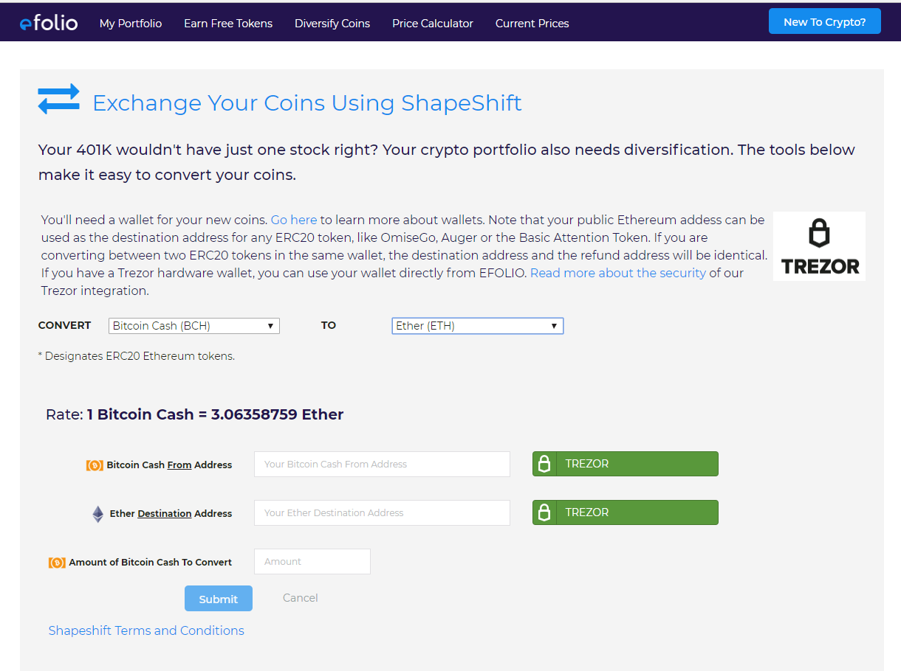

EFOLIO¶
What is EFOLIO?¶
- EFOLIO
- is a web application that allows you to track, analyze and diversify your cryptocurrency portfolio anonymously. EFOLIO has two integration points with TREZOR: 1) You can import coin balances from your Trezor into EFOLIO, enabling you to track your overall cryptocurrency portfolio value. Once synced, you can check your portfolio’s value from EFOLIO at any time without having to plug in your TREZOR.
- You can diversify your portfolio using the EFOLIO Shapeshift integration, converting between different cryptocurrencies that are secured by your TREZOR. Because EFOLIO supports ERC20 tokens, you can also buy and sell ERC20 tokens directly from your TREZOR.
EFOLIO is not a “wallet” and it never accesses, uses or requests your private keys. Rather, it uses APIs provided by TREZOR to ask the device to perform actions (like exporting accounts or signing a transaction). EFOLIO never has access to your keys on the wallet itself.
For more information on the safety and security of the EFOLIO TREZOR integration, please see the faq.
TREZOR User Manual¶
EFOLIO supports ether and ERC20 tokens. As such, please make sure your TREZOR is up-to-date with firmware version 1.4.0 before using ether with TREZOR.
This guide assumes that your TREZOR has been already initialized, i.e. you have been using it with TREZOR Wallet, Electrum or Mycelium before. If not please initialize your device first.
Syncing Your TREZOR With EFOLIO¶

To sync your coin balances with EFOLIO, first navigate to the Trezor Import page. Then, select the coin you want to sync and click the TREZOR button. TREZOR Connect prompt will pop up, asking you to plug in your TREZOR device. Enter your PIN and Passphrase (if you have it enabled). Then, Connect will ask you to export account information.
Once exported, you will be redirected to the ‘Add Position’ screen on EFOLIO. Here you will be able to add any additional information about this position, like the cost paid in fiat currency or other notes. You can then save the position and it is added to your portfolio.
If you are adding ether, you can additionally click ‘Add ERC20 Tokens’ which will use your ethereum address to sync with the blockchain and find your ERC20 token balances.
If you have already added this coin from your TREZOR, you will be able to edit the position; EFOLIO will recognize it is the same address. This functionality allows you to easily update your portfolio position if you have bought or sold any of your coins.
For a complete tutorial on importing your Trezor balances into EFOLIO, watch this tutorial video on YouTube.
Diversify Your Portfolio With Shapeshift¶
Use services provided by Shapeshift, EFOLIO allows you to convert cryptocurrencies stored on your TREZOR into different cryptocurrencies. Shapeshift provides an escrow address where you send the coins you want to convert. They convert the coins at the given rate and send your new coins to the wallet you provide.
First, select the pair you want from the dropdowns. If the coins are supported by TREZOR, a TREZOR Connect button will be available for acquiring your wallet address. Click the button and TREZOR Connect prompt will pop up, asking you to plug in your TREZOR device. Enter your PIN and Passphrase (if you have it enabled). Then, Connect will ask you to export account information.
This action will populate the from address field, as well as letting you know your current balance for that coin. This is the account you will send your coins from.
Do the same for the destination address. This will populate the account you want to send your new coins to.
In the case of ERC20 tokens, your ‘from’ and ‘to’ address will be identical as all ERC20 tokens are secured by your ethereum address.
Pick the amount of coins you want to convert and click submit. This will call Shapeshift to get the escrow address where you will send your coins. At this point, you can use your TREZOR to actually send the coins. Before doing so, you can click the ‘Track My Order’ link to verify the validity of the Shapeshift escrow address.
To have your TREZOR sign and send the transaction, click the TREZOR button. Another TREZOR Connect prompt will show up and ask you to confirm the transaction on your TREZOR and select a transaction fee. In the case of ether or ERC20 tokens, the gas price will be displayed on the TREZOR itself. You can look at the address displayed on the TREZOR to be sure it is the same as the escrow address provided by Shapeshift.
Once confirmed, the transaction will be sent to the blockchain. You will receive a transaction ID which you can use to follow the mining of the transaction on the blockchain using a block explorer. You can also see the status of the transaction with Shapeshift by clicking the ‘Track My Order’ link.
Note: For selling ERC20 tokens, you must have sufficient ether in your wallet to pay for the transaction fee (gas).
For a complete tutorial on converting Bitcoin to a different crytpcurrency with Shapeshift and TREZOR, watch this tutorial video on YouTube.
For a demo of converting ethereum and ERC20 tokens using Trezor and Shapeshift, watch this tutorial video on YouTube.